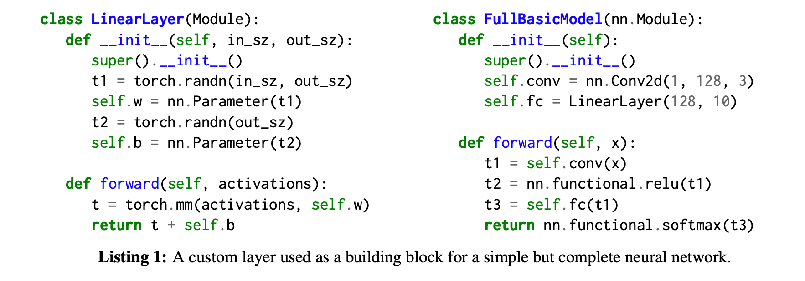
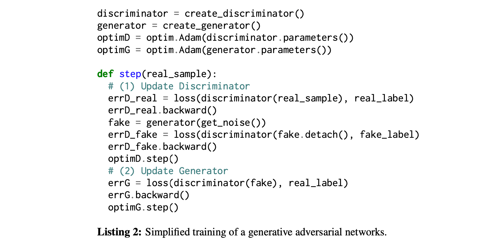
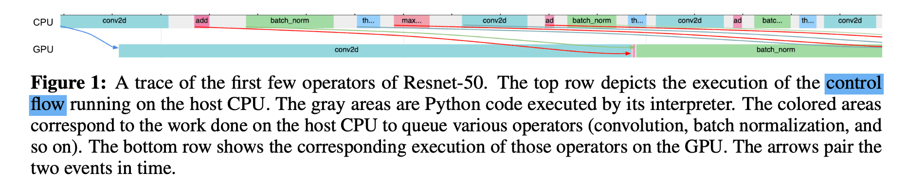
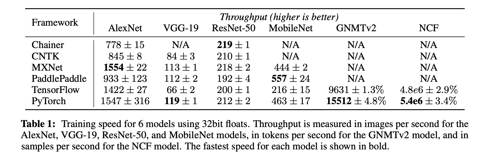
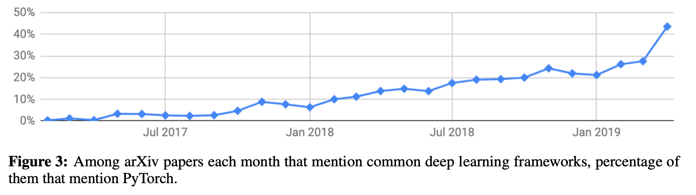

PyTorch: An Imperative Style, High-Performance Deep Learning Library
- ✅ 论文题目：PyTorch: An Imperative Style, High-Performance Deep Learning Library
- 发表时间：2019 年 12 月
摘要 Abstract
深度学习框架通常无法同时兼顾可用性（usability）和速度（speed），而 PyTorch 实现了两者兼而有之。
- PyTorch 提供了 Pythonic 编程风格，支持代码作为模型，使调试变得简单，并与其他流行的科学计算库保持一致，同时保持高效并支持 GPU 等硬件加速器。
PyTorch 的每个方面都是由用户完全控制的常规 Python 程序。本篇论文详细介绍了 PyTorch 实现的原则，以及这些原则如何体现在其架构中。
1 介绍 Introduction
随着人们对深度学习兴趣的增加，机器学习工具出现了爆炸式的增长。许多流行的框架如 Caffe、CNTK、TensorFlow 和 Theano，构建了一个静态的数据流图（static dataflow graph）表示计算，然后重复应用于数据批次。这种方法的缺点是缺乏易用性、调试的方便性和可以表示的计算类型的灵活性。
深度学习的 dynamic eager execution 相比静态具有更高的价值。最近的一些支持 dynamic 的框架：
- Chainer 的表达性较好，但牺牲了性能。
- Torch、DyNet 的性能、速度较快，但表达性、易用性低。
PyTorch 是一个兼顾易用性和性能的 Python 库。它可以通过自动微分和 GPU 加速来执行动态张量计算的即时执行，并且在这样做的同时，还能保持与当前最快的深度学习库相当的性能。
PyTorch, a Python library that performs immediate execution of dynamic tensor computations with automatic differentiation and GPU acceleration, and does so while maintaining performance comparable to the fastest current libraries for deep learning.
2 背景 Background
科学计算的四大趋势对深度学习越来越重要。
- （1）array-based programming
- （2）automatic differentiation
- （3）open-source Python ecosystem
- （4）hardware accelerators.
PyTorch 通过提供一个由 GPU 加速的基于数组的编程模型，并通过集成在 Python 生态系统中的自动差异化来建立这些趋势。
3 设计原则 Design principles
PyTorch 的成功源于将之前的想法编织成兼顾速度和易用性的设计。背后有四个主要原则：
- （1）Be Pythonic：PyTorch 是 Python 生态系统的一员，遵循了普遍建立的设计目标，即保持界面的简单和一致。
- （2）Put researchers first：使编写模型、数据加载器和优化器的工作尽可能地简单和高效。机器学习所固有的复杂性由 PyTorch 库在内部处理，并隐藏在直观的 API 后面。
- （3）Provide pragmatic performance：PyTorch 提供令人信服的性能，不以牺牲简单性和易用性为代价。
- （4）Worse is better：PyTorch 内部实现简单所节省的时间可以用来实现更多的功能，适应新的情况，跟上人工智能领域快速发展的步伐。
4 以可用性为中心的设计 Usability centric design
4.1 Deep learning models are just Python programs
PyTorch 放弃了 graph-metaprogramming based 方法，以保留 Python 的 imperative programming model。这种设计由 Chainer 和 Dynet 率先用于模型编写，PyTorch 将其扩展到深度学习工作流的各个方面：定义图层、组成模型、加载数据、运行优化器和并行化训练过程，都使用为通用编程开发的熟悉概念来表达。
这种解决方案确保了任何新的潜在神经网络架构都可以通过 PyTorch 轻松实现。
层（Layer）（在现代机器学习中，层实际上应该理解为具有隐式参数的有状态函数）通常表示为 Python 类，其构造函数创建和初始化其参数，其前向方法处理一个输入激活。模型（Model）通常被表示为组成各个层的类。Listing 1 演示了通过合成 PyTorch 提供的功能（如 2d 卷积、矩阵乘法、dropout 和 softmax）来创建整个模型，以对灰度图像进行分类。

“everything is a just a program” 的理念不仅限于模型，也适用于优化器（optimizers）和数据加载器（data loaders）。Listing 2 演示了 PyTorch 中采用的简单设计实现非常流行的生成式对抗网络。

4.2 互操作性和可扩展性 Interoperability and extensibility
PyTorch 允许与外部库进行双向数据交换。例如，它提供了一种机制，使用 torch.from_numpy() 函数和 .numpy() 张量方法在 NumPy 数组和 PyTorch 张量之间进行转换。类似的功能也可以用来交换使用 DLPack 格式存储的数据。
这种交换都是在没有任何数据复制的情况下发生的，无论转换的数组有多大，都需要恒定的时间。
此外，许多关键系统都是可以进行可拓展设计。
例如，自动微分系统（automatic differentiation system）允许用户添加对自定义可微分函数的支持。为此，用户可以定义一个新的 torch.autograd.Function 子类，实现 forward() 和 backward() 方法，指定函数及其导数。
同样，可以通过子类torch.utils.dataset 并实现两个方法来添加新的数据集。__getitem__ (索引操作符) 和 __len__ (长度操作符)，工作方式完全由实现者决定。
DataLoader 类处理符合这个接口的对象，并在数据上提供一个迭代器，该迭代器负责处理洗牌、批处理、并行化和管理 pinned CUDA 内存以提高吞吐量。
用户可以自由更换 PyTorch 中不符合其项目需求或性能要求的任何组件。
4.3 自动微分 Automatic differentiation
基于梯度的优化对深度学习至关重要。
PyTorch 能够自动计算用户指定的模型的梯度，而这些梯度可以是任意的 Python 程序。
PyTorch 使用了运算符重载的方法，每次执行时都会建立计算函数的表示。在目前的实现中，PyTorch 执行逆向模式自动微分（reverse-mode automatic differentiation），计算标量输出相对于多变量输入的梯度。使用正向模式自动微分（forward-mode automatic differentiation）可以更高效地执行输出多于输入的函数微分，但这种用例在机器学习应用中并不常见。PyTorch 可以很容易地扩展到使用数组级对偶数（dual numbers）来执行正向模式微分。
PyTorch 另一个有趣且不常见的特性是，它可以通过代码对 Tensors 采用对 Tensor 进行变种来进行微分，这是命令式程序（ imperative programs）的基本构件之一。
PyTorch 的两个特点 Imperative programming 和 Dynamic Computation Graphs.
✅ 5 Performance focused implementation
从 Python 解释器中高效地运行深度学习算法是众所周知的挑战：例如，全局解释器锁（global interpreter lock）有效地确保在任何给定时间内，任何数量的并发线程中只有一个在运行。基于构建静态数据流图（static data-flow graph）的深度学习框架通过将计算的评估推迟到自定义解释器来避开这个问题。
PyTorch 则以不同的方式解决了这个问题，它仔细优化了执行的每一个方面，同时让用户能够轻松利用额外的优化策略。
5.1 An efficient C++ core
大部分 PyTorch 是用 C++ 编写的，以实现高性能。核心 libtorch 库实现了张量数据结构、GPU 和 CPU 运算符以及基本的并行基元。它还提供了自动微分系统，包括大多数内置函数的梯度公式。这确保了由核心 PyTorch 运算符组成的函数的导数计算完全在多线程评估器（multithreaded evaluator）中执行，避开了 Python 全局解释器锁（ Python global interpreter lock）。
这种方法的其他作用：
- 允许快速创建绑定到多个其他语言（NimTorch、hasktorch）
- 创建了一流的 C++ 绑定和建模库，可以在 Python 不方便的地方使用。
5.2 Separate control and data flow
PyTorch 在控制流（即程序分支、循环）和数据流（即张量和对其执行的操作）之间保持严格的分离。
控制流的解析由 Python 和在主机 CPU 上执行的优化的 C++ 代码处理。
PyTorch 通过利用 CUDA 流机制，将 CUDA 内核调用排队到 GPU 硬件 FIFO，从而在 GPU 上异步执行运算符。这使得系统可以将 CPU 上的 Python 代码与 GPU 上的张量运算符重叠执行。由于张量运算通常需要大量的时间，这让我们可以让 GPU 饱和，即使在像 Python 这样开销相当大的解释语言中也能达到峰值性能。
5.3 Custom caching tensor allocator
几乎每一个运算器都必须动态分配一个输出张量来保持其执行结果。因此，优化动态内存分配器的速度至关重要。PyTorch 可以依靠优化的库来处理 CPU 上的这项任务。PyTorch 实现了一个自定义分配器，它可以增量地建立CUDA 内存的缓存，并将其重新分配给以后的分配，而无需进一步使用 CUDA API。
5.4 Multiprocessing
由于全局解释器锁（GIL），Python 的默认实现不允许并发线程并行执行。为了缓解这个问题，Python 社区建立了一个标准的多处理模块，其中包含了一些实用程序，允许用户轻松地生成子进程并实现基本的进程间通信基元。
PyTorch 将 Python 多处理模块扩展为 torch.multiprocessing，它是对内置包的一个下拉替换，并自动将发送到其他进程的时序器数据移动到共享内存中，而不是通过通信通道发送。
这种设计极大地提高了性能，并使进程隔离性变弱，从而形成了更接近于常规线程程序的编程模式。
5.5 引用计数 Reference counting
用户在设计模型时，往往会在训练过程中利用所有可用的内存，而增加 batch size 是加快这一过程的常用技术。因此，为了提供出色的性能，PyTorch 必须将内存视为一种稀缺资源，需要谨慎管理。
PyTorch 采用了一种不同的方法：它依靠**引用计数方案来跟踪每个张量的使用次数，并在次数达到零后立即释放底层内存。**请注意，PyTorch 通过与 Python 自己的引用计数机制集成，既跟踪 libtorch 库的内部引用，也跟踪用户在其 Python 代码中的外部引用。这确保了当 tensors 不再需要时，内存会准确地被释放。
6 评估 Evaluation
将 PyTorch 与其他几个常用的深度学习库进行性能比较。
6.1 异步数据流 Asynchronous dataflow
首先对 PyTorch 在 GPU 上异步执行数据流的能力进行量化。使用内置的剖析器来检测各种基准，并记录单个训练步骤的执行时间线。
图 1 显示了一个 ResNet-50 模型的前几个操作的代表性执行时间线。排队工作的主机 CPU 很快就超过了 GPU 上运算符的执行速度。这使得 PyTorch 能够实现几乎完美的设备利用率。在这个例子中，GPU 执行时间是 CPU 调度时间的三倍左右。具体比例取决于主机 CPU 和 GPU 的相对性能，以及每个张量中的元素数量和要在 GPU 上执行的浮点计算的平均算术复杂性。

6.2 Memory management
如图 2 所示，第一次迭代的行为与后续迭代的行为有很大不同。起初，对 CUDA 内存管理函数（cudaMalloc 和cudaFree）的调用会长时间阻塞 CPU 线程，从而降低 GPU 的利用率，使执行速度大大减慢。在随后的迭代中，随着 PyTorch 缓存内存分配器开始重用之前分配的区域，这种影响就会消失。
6.3 Benchmarks（基准）
将 PyTorch 与三个流行的基于图的深度学习框架（CNTK、MXNet 和 TensorFlow）、一个定式运行框架（Chainer）和面向生产的平台（PaddlePaddle）进行对比，来全面了解 PyTorch 的单机急切模式性能。
在所有的基准测试中，PyTorch 的性能都在最快框架的 17% 以内。

6.4 Adoption（采用）
通过统计自 2017 年 1 月 PyTorch 首次发布以来，各种机器学习工具（包括 Caffe、Chainer、CNTK、Keras、MXNet、PyTorch、TensorFlow 和 Theano）在 arXiv 上被提及的频率，来量化机器学习社区对 PyTorch 的接受程度。

7 Conclusion and future work
PyTorch 将对可用性的关注与对性能的谨慎考虑相结合，已经成为深度学习研究界的热门工具。
除了继续支持深度学习的最新趋势和进展外，未来还计划继续提高 PyTorch 的速度和可扩展性。
最值得注意的是，我们正在开发 PyTorch JIT：这是一套工具，可以让 PyTorch 程序在 Python 解释器之外执行，并在那里进一步优化。我们还打算改进对分布式计算的支持，为数据并行提供高效的基元，并为基于远程过程调用的模型并行提供 Pythonic 库。